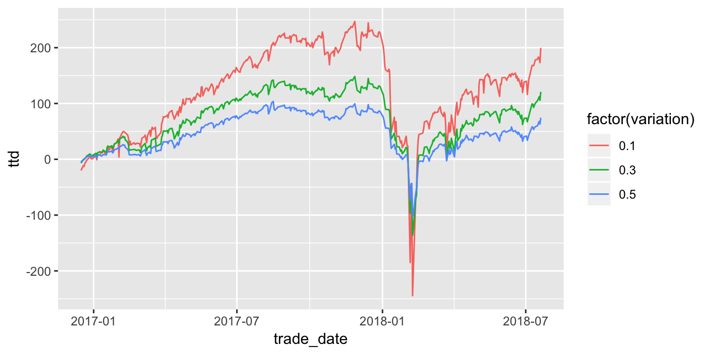

Due Date: Friday 11/30 by 12:00p.
Format: What you turn in to me should be a self-contained R Studio project that contains all the data (which you will be provided) and a Rmarkdown file which will contain the analysis: sentences, graphs, etc. All graphs and tables should be properly labeled.
Starter Project: I have uploaded this to the Google Drive. This Rstudio project will serve as the starting point for your analysis. I suspect that most groups will simply add an Rmarkdown file to this project, and that is what they will ultimately turn in to me. Please add any data files that you generate to the data subdirectory.
I have included my wrangling related code, as well as a variety of intermediate data files. This is in case I have to reference those files over the course of this assignment. Most groups will find no reason to touch a lot of the data, and a lot of the columns that are in the data files. It will be good practice for you to “cut through the noise” to focus in on just what is relevant to your analysis.
Strategy and Variations: All groups will backtest three variations of the same strategy: selling a strangle in each underlying every month. The three varitions will be the moniness (delta) of the strangles: 50%, 30%, 10%.
Dates/Expirations: The backtest will include a total of 19 expirations: January 2017 - July 2018. The dates of the backtest will be 12/16/2016 - 7/20/2018. The expirations, along with their associated execution dates can be found in project_expiration.csv.
Underlyings: There is data for 50 ETF underlyings included in the data set. You must include at least 20 underlyings in your analysis. The list of underlyings can be found in project_underlying.csv.
Trades: The trades have already been calculated for project_trade_master.csv. (This was the first part of your initial assignment, albeit for a different time period.)
PNLs: The PNLs for the trades have already been calculated for you and can be found in project_strangle_pnl.csv. (This was the second part of your initial assignment, albeit for a different time period.) There are a variety of pnl related columns in this dataset; the only ones that you need to worry about are dly_opt_pnl, ttd_opt_pnl, and strangle_unity_mult.
Position Size Scaling: The prices of our underlyings vary considerably, and therefore so do the prices of their options. For the backtest, I wanted each strangle for each underlying to be approximately the same size. In particular, I created a position scaling method that would make each strangle sale to result in about $0.90 in premium. Position scaling data is stored in project_position_scaling.csv.
Here is some code to see the min, max, and average premium, sold for each variation, for all 50 underlyings.
# reading in the data
df_position_scaling <-
read_csv("project_position_scaling.csv", col_types = cols())
# avg, min, and max premium sold for each variation
df_position_scaling %>%
group_by(variation) %>%
summarize(
avg_prem = mean(strangle_prem_sold)
, min_prem = min(strangle_prem_sold)
, max_prem = max(strangle_prem_sold)
)## # A tibble: 3 x 4
## variation avg_prem min_prem max_prem
## <dbl> <dbl> <dbl> <dbl>
## 1 0.1 0.800 0.176 0.991
## 2 0.3 0.921 0.621 0.997
## 3 0.5 0.942 0.537 0.998Calculating TTD PNL: The strangle_unity_mult factor is what affects the position rescaling. Here is an example query that demonstrates how to calculate the cummulative PNL for each variation, and then graph it with ggplot2().
# reading in the data
df_pnl <-
read_csv("project_strangle_pnl.csv", col_types = cols())
# adding a scaled PNL column,
df_pnl <-
df_pnl %>% mutate(daily = dly_opt_pnl * strangle_unity_mult)
# adding ttd pnl column for the three strategies and plotting
df_pnl %>%
group_by(variation, trade_date) %>% # group all pnls by variation and day
arrange(variation, trade_date) %>%
summarize(daily = sum(daily)) %>% # adding all daily pnls for all trades
mutate(ttd = cumsum(daily)) %>%
ggplot() +
geom_line(aes(x = trade_date, y = ttd, color = factor(variation)))